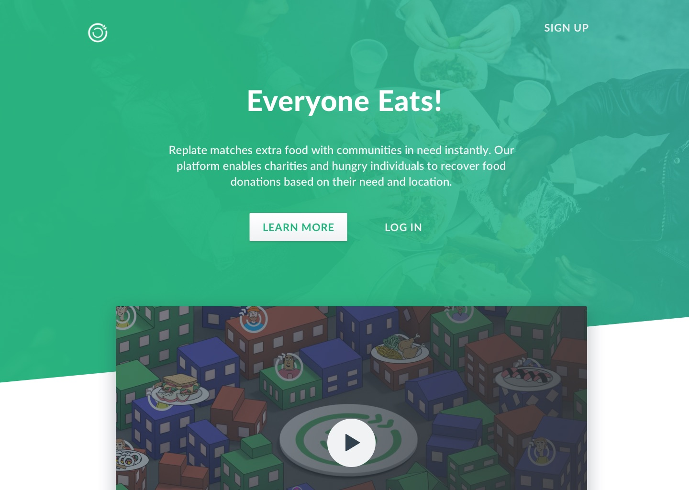
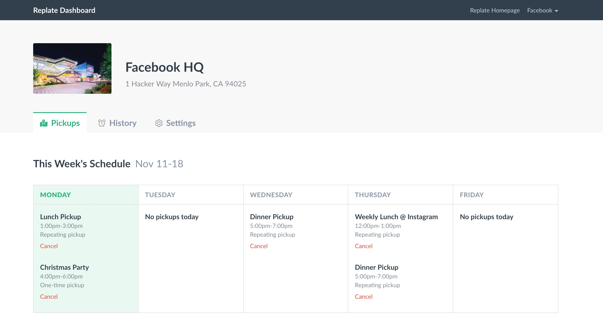

Re-Plate is a Berkeley nonprofit organization founded in 2016 that aims to reduce food waste and hunger in the community. Re-Plate collects food donations from other businesses and hires drivers to transport the extra food to other nonprofits and homeless shelters.
Even though Re-Plate is a relatively new nonprofit, they're growing incredibly quickly and have recovered over 100,000 pounds of food. My team in Blueprint developed a dashboard for businesses to request donation pickups, with the following features:
- Marketing homepage and information pages
- Business signup, multiple office location management
- Requesting pickups for each location, API posts to Onfleet (task management app)
- Donation history, payment options

As a project leader, I delegated tasks to my team members and managed product development. Additionally, I contributed frontend code and design.
To see a demo, head over to the staging site and sign in with:
b1@example.com passwordBack to home